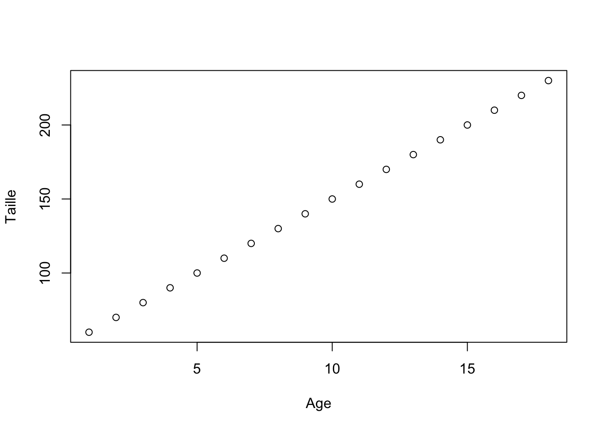

Guide R
2025-09-15
Chapitre 1 Guide R
Ceci est le guide R que nous proposons pour vous accompagner durant le cours de Stat I.
1.1 Pourquoi la programmation ?
La programmation est le processus qui consiste à donner des instructions à un ordinateur afin qu’il puisse effectuer des tâches. Ces instructions sont écrites dans un langage que l’ordinateur peut comprendre. Le langage R, utilisé dans ce cours, est un langage de programmation couramment utilisé pour les statistiques et l’analyse de données.
Pour les statistiques et la psychologie, programmer en R offre de nombreuses possibilités, bien plus que les logiciels classiques d’analyse de données :
- Automatiser les tâches répétitives d’analyse de données en recherche psychologique
- Analyser et visualiser efficacement les données issues d’expériences et d’enquêtes
- Reproduire et partager les analyses pour assurer la transparence dans les études psychologiques
- Appliquer des méthodes statistiques pour répondre à des questions de recherche en psychologie
Vous pouvez considérer R comme une calculatrice très avancée qui vous permet, avec des connaissances, de réaliser n’importe quelle opération sur vos données et de créer n’importe quelle visualisation pour accompagner vos résultats.
1.2 Exemples de programmation en R
Voici une commande R simple qui additionne deux nombres :
# Ceci est un commentaire, le symbole dièse indique à la machine d'ignorer ce texte
# Ci-dessous c'est une instruction ou commande:
2 + 3## [1] 5# Ci-dessus on voit le resultat, c-a-d la sortie de l'ordinateur après avoir éxecuté l'instruction
# Après les crochets on voit la sortie de l'operation, 2+3 étant égal à 5Un des concepts de base est celui des variables. Les variables stockent des informations pour une utilisation ultérieure et peuvent être modifiées au cours du code, par exemple :
## [1] 5Si on modifie une variable, cela change le résultat :
## [1] 6Cela peut être très utile si, par exemple, vous souhaitez mettre à jour la variable. Par exemple, simulons un individu qui vieillit au fil des années :
age <- 0 #Age initial
for (annee in 1:18) { # Ceci est une boucle "for", leur utilisation est détaillée plus tard dans le guide
age <- age + 1 # On incrémente la variable "age" de 1 à chaque tour de boucle
print(age) # On affiche la valeur actuelle de "age"
if (age == 18) { # Si l'âge atteint 18 ans
print("ça y est je suis majeur") # On affiche un message indiquant la majorité
}
}## [1] 1
## [1] 2
## [1] 3
## [1] 4
## [1] 5
## [1] 6
## [1] 7
## [1] 8
## [1] 9
## [1] 10
## [1] 11
## [1] 12
## [1] 13
## [1] 14
## [1] 15
## [1] 16
## [1] 17
## [1] 18
## [1] "ça y est je suis majeur"On peut même tracer des variables dans R, par exemple on peut tracer la courbe de taille attendue pour un enfant
Age <- 1:18 # Ceci est un vecteur, plus la dessus dans le chapitre 3
Naissance <- 50#taille a la naissance
Croissance_par_annee <- 10#10 cm par an
Taille <- Naissance + Age*Croissance_par_annee #la taille c'est la taille a la naissance + la croissance par annee multipliée par l'age
plot(Age, Taille)#Fonction pour faire des graphiques
Bien sûr ce n’est pas très credible car on s’attend que la progression de la taille avec l’âge soit linéaire mais ça donne une idée du type d’operations que l’on peut faire.